A tour of the report
You have run pytest and you have one HTML file. This page walks it in the order you would explore it — the nine tabs down the left rail, the panels inside each one, and the interactions nobody finds without being shown: the status chips, the copy buttons folded behind an ellipsis, the deep links, and the dialogs that Escape closes.
One file, and a rail down the left
The report is a single static HTML document. A default run writes
pytest_html_report.html, and that file is the whole product. There is no server to
start, no assets/ folder that has to travel beside it, no build step, and no network
access at any point after generation.
Everything the page draws with is written into the document itself at generation time, in load
order: jQuery, jsPDF, dom-to-image, Bootstrap, DataTables, JSZip, the DataTables export buttons
and Chart.js — along with the favicon and the logo as data: URIs. The loading spinner
was one of those until 0.4.1, when the 70 KB animated GIF was replaced by a rotate-only CSS
animation and the jQuery fade by an opacity transition. Both of the old ones were stepped by the
main thread, and bringing a report up is one long block of main-thread work — so on Firefox and
WebKit the spinner sat frozen through all of it and the overlay then jumped away rather than faded.
The new pair run on the compositor and keep moving however long the page behind them takes. The
icons are Font Awesome 4.7 glyphs shipped as cropped SVGs and painted as CSS masks, so an
<i class="fa fa-home"> still inherits its size from the surrounding text and
still takes its colour from currentcolor exactly as the font did — and still draws
with the machine offline.
That is what self-contained buys. The same file opens the same way off a CI artifact
server, out of an email attachment, from file:// on a locked-down laptop, and out of
an archive years after the CDN that used to serve those library versions stopped answering.
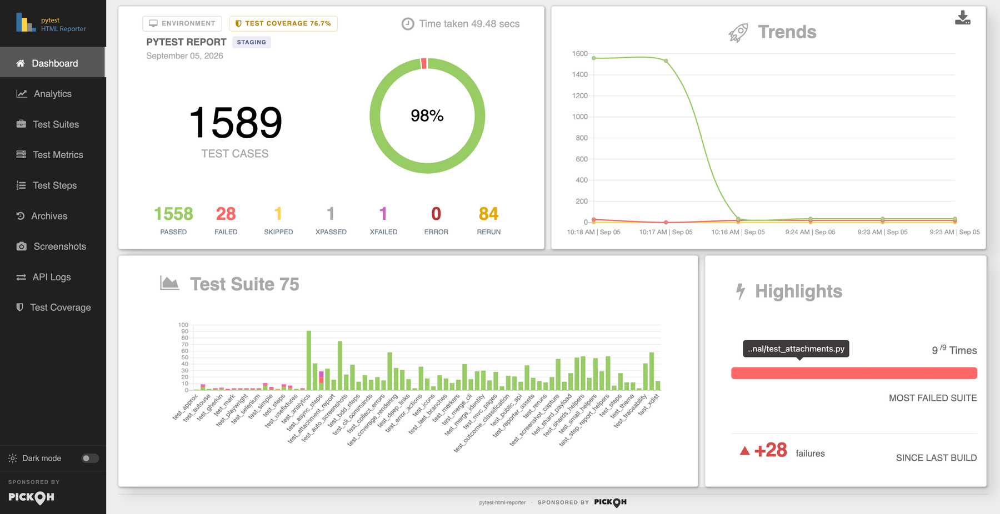
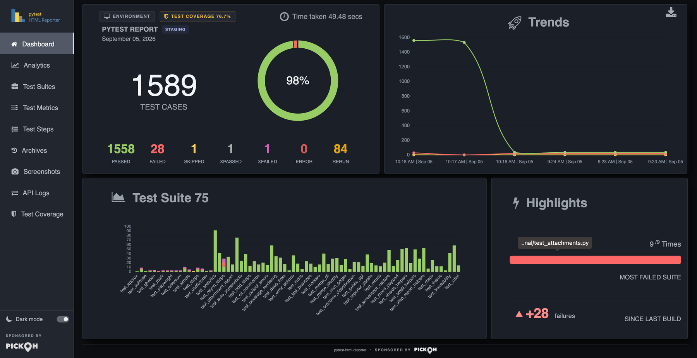
The one thing that lives beside it
Screenshots are the exception. They are written as real PNGs into
pytest_screenshots/ next to the report and referenced relatively. The HTML alone opens
anywhere and every tab works; the pictures travel with the folder.
report/
pytest_html_report.html the report
output.json this build, machine-readable
archive/output_<ts>.json every retained earlier build
pytest_screenshots/*.png the imagesarchive/ JSON files are not
decoration. The Archives tab, the Dashboard's Trends chart, the whole Analytics tab and the
coverage trend are all read back out of them.The side navigation
A fixed dark rail runs the full height of the window. The packaged logo sits at the top and is
itself a link back to the Dashboard. Under it are the nine tabs, then any
--report-link entries you added, then the theme switch and the sponsor mark — pinned
to the foot of the rail whatever the viewport height.
Every tab link is a real #hash anchor. That makes tabs linkable, makes the browser's
back and forward buttons move between them, and lets a URL pasted into a chat window open the report
on the tab you meant.
| Tab | Hash | The question it answers |
|---|---|---|
| Dashboard | #dashboard | How did this run go, in one screen? |
| Analytics | #analytics | How do these tests behave across every retained build? |
| Test Suites | #suites | Which suite is carrying the failures? |
| Test Metrics | #test-metrics | What happened to one particular test? |
| Test Steps | #test-steps | What did that test actually do, and where did its time go? |
| Archives | #archives | What did the builds before this one look like? |
| Screenshots | #screenshots | What was on the screen when it broke? |
| API Logs | #api-logs | What did the service send back? |
| Test Coverage | #coverage | How much of the code under test did this run touch? |
Only one tab is displayed at a time. Showing a tab also re-sizes that tab's charts on the next tick, because a canvas in a hidden tab measures zero pixels and would otherwise be drawn one pixel high. Several tabs do their own setup on first open: Analytics builds its table and draws its charts, Test Steps builds its tree, API Logs builds its rail, and Test Coverage sorts its table ascending so the least-covered files lead.
#attachments is kept as
an alias for #api-logs, so a link handed round before the tab was renamed still lands
correctly.Below 768px the rail collapses to a 56px icon-only strip: the labels go to zero, the logo is
hidden, and the sponsor keeps only its map pin. Entries added with --report-link open
in a new tab, and any scheme that is not http, https or
mailto is dropped on the way in — a nav entry can never become a way to run script in
whoever opens the report. Relative paths such as ./htmlcov/index.html are kept, which
is the point of the option.
Dashboard
The landing tab, laid out to fit one screen at desktop width. Two rows of cards, answering one question: how did this run go?
The summary card
Top left. A strip along its top carries three controls: an Environment button
that opens the environment dialog, a Test Coverage NN% chip that is present only
when this run measured coverage — coloured by grade, and crossing to the Test Coverage tab when
clicked — and a clock glyph reading Time taken, the run's wall time, written as
12.34 secs under a minute and HH:MM:SS Hrs above it.
Under that sit the report title from --title, the environment badge from
--environment beside it, and the run date. The headline figure is the total test count
in large type under the caption TEST CASES — pass plus fail plus skip plus error plus
xpass plus xfail. Reruns are counted separately and are not in that total.
Beneath it is a doughnut with an 80% cut-out and six slices — PASS, FAIL, SKIP, XPASS, XFAIL and ERROR — in the run's status colours. Hovering a slice gives its name and its share as a percentage, and the pass percentage is drawn in the hole. Under the chart sit seven counters: passed, failed, skipped, xpassed, xfailed, error and rerun, each in its own status colour.
Trends, and the PDF export
Top right, Trends: a three-series line chart — Passed, Failed, Skipped — across
this run plus up to five archived builds, each point labelled HH:MM | Mon DD.
Failed here is failures and errors added together, read off the same per-build list the
Highlights delta uses, so the two can never disagree.
A download glyph in this card's corner exports the whole Dashboard as
pytest_html_reporter.pdf, a full-width raster in a landscape page. The exported PDF
always shows the desktop dashboard whatever size the window is: below 1200px the
report re-renders itself in an off-screen copy laid out against a 1600×900 viewport and
captures that instead, with chart animation disabled so the image is deterministic rather than a
half-swept doughnut.
Test Suite, and Highlights
Bottom left, Test Suite: a stacked bar chart with one column per suite and one series per outcome. Its tooltips are in index mode, so hovering a column reports every outcome in it at once rather than only the bar under the pointer. The heading carries the suite count.
Bottom right, Highlights, two figures. MOST FAILED SUITE shows
N /M Times over a progress bar whose red portion is that suite's share of failing
builds, with a tooltip carrying the suite's full name. Below it,
SINCE LAST BUILD: the change in failures against the previous build, written with
its sign even at zero (±0 failures), green when it fell and red when it rose.
Hovering gives the two counts behind it — 12 failures this build, 9 in the build before it
— because +3 reads very differently against 3 than against 300.
Analytics
How these tests behave over time. Everything here is aggregated in Python before the
page is written: output.json and every archive/*.json beside it are lined
up oldest first and reduced to per-test histories. The subtitle states the scope out loud —
across 14 builds, Aug 21 09:12 to Sep 03 14:41 — so the numbers are never read against a
range you have to guess at.
Six headline tiles lead: stability score (0–100, graded strong, fair or low), pass rate this run with its movement in points against the previous build, flaky tests, always failing, builds analysed naming the oldest, and time in tests with the median build duration as its note.
| Panel | What it plots |
|---|---|
| Pass rate across builds | Share of decided tests that passed, over the last 20 builds. Barely smoothed, so the curve does not invent movement between points, and deliberately not zero-based — a suite living between 96% and 99% is exactly the one whose two-point drops matter. |
| What moved, build to build | Regressed, Fixed, Added and Dropped as a stacked bar per build step. |
| Where the time goes | This run's tests across seven duration bands, from < 100ms to 30s +, in one deepening ramp — the bars are one measure sliced up, not seven things being compared. |
| Who owns what | One row per owner, worst first: tests held, share of the suite, mean pass rate, failing now, flaky, and time. Drawn only once something in the run carries the marker, with an Unowned row sorted last whatever its numbers. |
| How much it matters | The same figures per severity level, in ladder order rather than by their own numbers, Unrated last. The line above it leads with what somebody came for — 1 critical test failing. |
| Test base growth | Tests collected per build, as a stepped line. |
| Slowest tests in this run | The top 10 as a horizontal bar chart, in seconds, with the test names on the axis. |
Four movement cards follow — Newly failing, Newly fixed, New tests and No longer run — each listing up to six test names with the suite underneath.
Why this run failed
This panel is read off the current build alone, so it works on a very first run — which is
exactly when a red run wants explaining. Failures and errors are grouped by the exception named in
their message. Each group gets a count, a share, a bar, a movement chip against the previous build
(new, level, +3) and the names of the tests in it.
Up to 8 groups and 4 names per group are shown, and the tail collapses into an and N
more line. Unclassified is pinned to the bottom however large it gets, because a
list headed "Unclassified: 40" has answered nothing. The heading note is a sentence — 12
failures, 9 are TimeoutException — since the count on its own is already on the Dashboard.
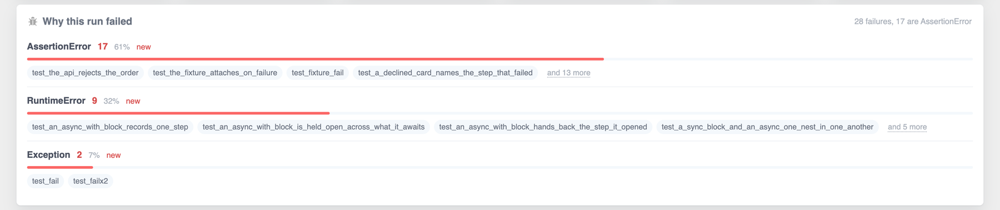
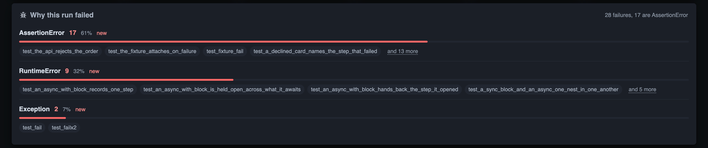
The "and N more" dialogs
Every tail on this tab — the fault groups and all four movement cards — shows a handful of names and folds the rest behind an and N more button. The button opens one shared dialog, titled after the card it came from, listing every name.
The dialog has a search box of its own (Search this list) and a live count beside the
title. While a search is narrowing the list the count reads 7 of 42 tests rather than
42, because saying 42 with thirty-five rows filtered out reads as a list that lost
them. A search matching nothing says Nothing here matches that. Escape closes it.
The stability table
The tab closes with a sortable table, ranked worst-first before anyone touches it: always-failing at the top, then flaky by how much they flip, then everything else by pass rate. Its columns are Test, Verdict, History, Pass rate, Builds, Flips, Retries, Current streak and Duration.
History is a sparkline — the last 12 outcomes as bare coloured blocks, described once as a sentence for a screen reader ("Last 12 builds, oldest first: 9 passed, 3 failed") rather than twelve blocks each carrying a tooltip of its own. Verdict, pass rate, streak, duration and the sparkline all sort on their underlying number rather than on the text you can see.
--archive-count keeps. If nothing failed, the fault panel is simply absent.Test Suites
Outcome breakdown for every test suite in this run. One sortable table, one row per suite, with columns Suite, Pass, Fail, Skip, xPass, xFail, Error and Rerun. It sorts on Fail descending by default, so the suites worth opening the tab for lead.
Every count is a pill, and a pill reading 0 is dimmed so a row of noughts recedes
and the numbers that matter stand out. The Suite cell is split so the filename leads in full weight
and its directories stay in the background.
Above the table is a summary chip row built live from the rows the search box is currently showing: the suite count, then one chip per outcome the run actually produced. An outcome with a zero total is left out rather than shown empty.
Each Suite cell is also a jump cell, titled Open this suite in Test Steps. Clicking it — or pressing Enter or Space on it, since it is focusable — crosses to Test Steps with that suite isolated: every other group in the rail shut, that suite's own first failure opened in the reading pane, and its heading flashed so the eye knows where it landed.
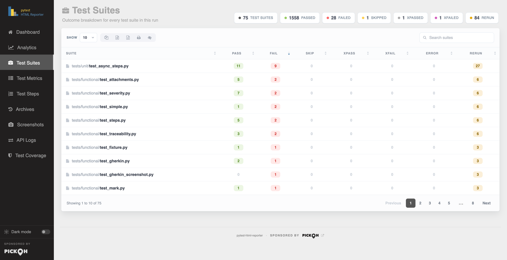
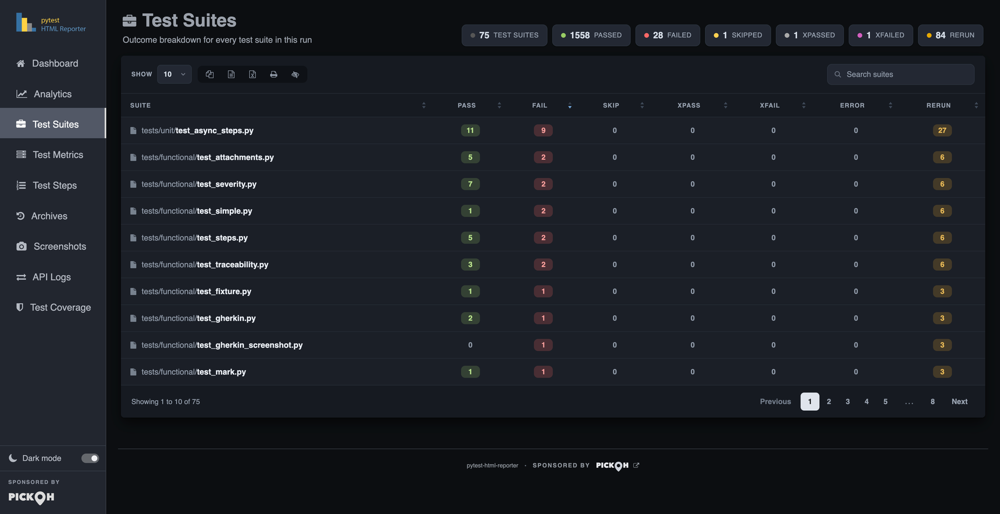
Test Metrics
Every test case with its status, duration and error. The densest tab, and the hub. Ten columns: Suite, Test Case, Status, Time (s), Rerun, Error Message, Logs, Data, Steps and Screens. It sorts on Time descending by default.
Status is a coloured pill. Suite and Test Case are both jump cells into Test Steps — the suite cell opens the group, the test cell opens that exact test. The error cell holds the first 50 characters of the message; when the message ran past that, the last 8 characters fade out rather than ending in an ellipsis. A test with nothing to say gets no buttons at all.
The last four columns are counts that are also doors. Logs shows the number of captured output lines and opens the captured-output panel. Data shows the number of attachments and crosses to API Logs scoped to that one test. Steps shows the number of named steps and crosses to Test Steps with that test open. Screens is a strip of live thumbnails that open the lightbox. A column with nothing in it shows an em dash instead of a zero-count button.
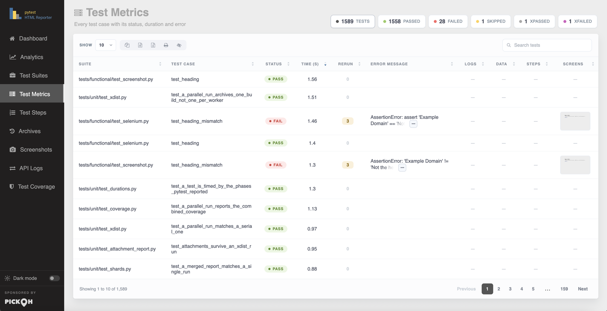
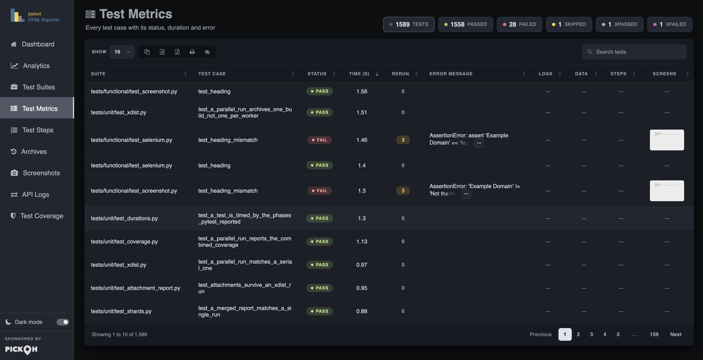
The Rerun trail
A retried test is one row carrying the outcome that stuck. That is the honest shape, but the row shows
the message of that attempt — and an attempt that stuck by passing has no message, so a test
that failed twice and then passed said PASS 2 and nothing anywhere in the report
said what it had failed with.
Attempt 1 FAIL 0.31s
AssertionError: connection refused: could not connect to postgres on localhost:5432
the container was still starting when the fixture handed back
Attempt 2 FAIL 0.28s
ValueError: stale cache handed back order #7 after the write to #8
Attempt 3 PASS 0.30s KEPTThe list ends on the attempt the row itself is showing, marked kept: ending on the last
attempt that was thrown away would leave a panel whose final line disagrees with the row that opened it.
Two failures for two different reasons is a different bug report from the same failure twice, and neither
is visible from a count — so the panel's Copy button hands the whole trail over as
one line per attempt followed by that attempt's message, which is the shape somebody pastes into an issue.
Under -n, each attempt also says which xdist worker ran it.
The count and the trail always agree, and that holds across both folds — a retry inside one
process, and a node id that ran in two shards — so a test retried twice on a shard that then ran
again on another machine reports four attempts and shows four. The trail is parked outside the table, so
it never reaches the search index or the CSV, Excel and print exports, and the Rerun column
still exports the single number it always did.
0
the column has always shown, with the button disabled rather than only styled flat, so it is not a tab stop
either. A build archived before 0.4.2 does the same: the count was stored, the
attempts behind it were not, and an empty panel would be worse than none.The status filter chips
The chips above the table are filters, not decoration. Clicking any outcome chip filters the Status column to it; clicking the active chip clears it. The run total is always the unfiltered position and is the way back.
The search term is anchored — ^pass$ — so filtering to passes does not also pull in
the xPASS rows. The chip set itself is captured while no filter is on and then held, because
filtering to failures leaves every other outcome with no rows to count, and the numbers you filter
from have to stay put. Focus is handed back to the chip you clicked after the table
redraws, so the row does not lose your place.
Search, paging, and the five exports
Four tables run on the same engine and behave identically: Test Suites, Test Metrics, Test Coverage and the Analytics stability table. Each has a page-length menu (10 / 25 / 50 / 100 / All), a search box with a table-specific placeholder — Search suites, Search tests, Search files — sortable headers on every column, and a footer reading Showing 1 to 25 of 340, with (filtered from N) appended when a search is on.
Five buttons sit between the length menu and the search box, each an icon with a tooltip:
| Button | What it produces |
|---|---|
| Copy | The visible columns of the visible rows, to the clipboard. |
| CSV | A download named from the table and the local date and time, e.g. SuiteMetrics-3/9/2026, 1:22:41 PM.csv. |
| Excel | The same rows as an .xlsx. This is what JSZip is bundled for. |
| A print-formatted view of the visible, left-aligned rows of that table alone. | |
| Hide Column | A two-column column-visibility menu with a Restore entry appended. |
Every export takes the visible columns only, and the Analytics sparkline is excluded because a strip of coloured blocks has no text to export. This is also the reason captured output, attachment payloads and step trees are parked in hidden stores rather than in cells: a cell holding a few thousand lines would be swept into the search index and into all five of these exports.
The row action strip, and the fold behind the ellipsis
A row whose test has an error message carries an action strip in its error cell. It rests as a
single … button, titled Show what can be done with this failure;
pressing it reveals four more, which have been in the markup the whole time — hidden by width and
opacity rather than by display, which cannot be transitioned. If the strip has to wrap
onto the next line when it opens, it animates from where it was to where it now belongs, so the move
reads as travel rather than as a reappearance.
Show the full error the overlay, traceback in a <pre>
Copy the full error clipboard, plus a toast previewing it
Copy the command that runs this test again pytest tests/test_login.py::TestAuth::test_declined_card
Copy a link to this test <report url>#test-<slug>-<hash>The rerun command is built from the test's node id, not by joining the suite and test names in the row — a test inside a class is listed under its own name where pytest wants the class in front of it. A node id a shell would not read as one word is quoted, since a parametrised test's brackets are a glob pattern to zsh. A record with no node id gets no button at all, rather than being offered a command that would run everything.
Every copy confirms twice: the button turns to a tick for a moment, and a toast appears mid-screen naming what landed — Error copied, Command copied, Link copied — and previewing up to 600 characters of it. Twenty-two pixels of button at the end of a long row is not legible from wherever the pointer is, and the toast also says which of the three landed. It takes no clicks, so the row underneath stays live while it is up. The toast is announced to a screen reader; the preview beneath it is not, because "Error copied" is the news and forty lines of traceback read out after it is not.
Where the clipboard API is unavailable — the common case from file:// — a throwaway
textarea takes over, and if even that is refused the toast reads Press Ctrl+C to copy
rather than leaving a button that did nothing and no reason why.
Only one strip is open at a time. A click anywhere else, or Escape, shuts it.
The captured-output panel
The Logs column opens an overlay carrying that test's captured output, each log
section under its own heading — Captured stdout call, Captured log call and the
rest. The same panel serves the Show the full error action, where it holds one failure's
whole traceback in a <pre> so its line breaks and indentation survive.
The panel's Copy button is bound to whichever of the two was loaded, decided when the panel is filled rather than read back off the screen, because output sections and a traceback are assembled differently.
-s or
--capture=no — a notice above the table says exactly that, rather than leaving a column
of dashes to read as a broken feature. See Configuration for what
each capture mode keeps.Deep links to a single test
Every row carries an anchor of its own, and Copy a link to this test hands you the URL. The anchor is built from the node id: flattened to lowercase letters, digits and dashes, cut back to a whole word at 72 characters, with six hex digits of the whole node id's SHA-1 after it.
pytest_html_report.html#test-tests-test-login-py-testauth-test-declined-card-ff68f3
└── slug from the node id ────────────────────┘ └SHA-1┘It is deliberately not positional. A positional anchor still resolves — it opens
whichever test has since taken that place, with nothing on the page to say it is not the one that
was sent. Building it from the node id means the link survives three tests being added in front of
it, survives a re-sort and a re-page, and keeps pointing at the same test in a CI job's latest report
build after build. The hash digest keeps two tests apart when their slugs are cut to the same string
— test_one[a-b] beside test_one[a_b] — and a node id that appears twice,
under pytest-repeat or a collected rerun, has its repeats numbered.
Opening such a link does real work. It switches to Test Metrics, builds the table if the page is still coming up, and finds the row through the table's own API rather than by element id, because only the current page of the table is in the document and a row on page four is not there to be found. It then clears whatever was hiding it — the search box and the status chips, since "show me the failures" is the likeliest thing to be hiding the row a link was pasted for — pages the table to that row, scrolls it to the centre and flashes it for a couple of seconds.
#list-item-7 opens the report on Archives with build 7 highlighted and scrolled
into view. Tab hashes, #list-item-N and #test-… are all read on load
and on every hash change, so the back button works across all three.Test Steps
What each test did, step by step, and where its time went. Suite, then a test in it, then what that test did. It is a page of its own rather than a panel inside Test Suites, precisely so the high-level page stays skimmable.
It is never empty. Even a suite that has never named a step gets a tree: every test has a set up, a test body and a tear down, each independently timed, and every test carries its markers, its parameters, the fixtures it named and its docstring. Naming steps makes the tree deeper; it does not bring it into existence. A phase with no steps of its own is still drawn, because its duration is the answer to "where did the time go" for the test whose setup is the slow part — which is exactly the test least likely to have named anything.
The rail on the left lists suites as collapsible groups. Each test is a button
with a status dot, its name, a one-line note (14 steps, the scenario name, or
no steps named) and its duration. On a first visit every group is shut, so a 600-test
run shows the shape of the suite rather than nine screens of names. Expand all and
Collapse all sit in the toolbar beside the filter pills — All, Failed, Scenarios,
Tests, each carrying a count and each omitted when it would match nothing — and a search box,
Search by test, step, marker or feature. Underscores are indexed both ways, so typing
declined card finds test_a_declined_card; a search opens any shut group
holding a match, and clearing the box leaves groups as they are rather than shutting one you opened
by hand.
From 0.4.1 the pills can run to three rows, because they answer different questions and
this team's blockers needs all three answered at once. The second row appears once anything
in the run carries an owner: one pill per team, counted, busiest first, with
Unowned at the end. The third appears once anything carries a severity,
drawn in ladder order rather than by count, with Unrated last. Each row counts
inside the rows above it, so a pill's number is always what the rail will show if you press it, and
a row is not drawn at all for a run that wrote none of that marker.
The reading pane on the right opens with the test's name and suite and a status
badge reading FAIL · 4.20 s. A BDD test leads with a Feature strip naming the
feature, the scenario and the file. Then a row of facts — description, markers, parameters,
fixtures — as badges, with a marker's tooltip saying where it was written ("user marker,
from the class"), which is the answer when nobody remembers applying it. owner and
severity are pulled out into rows of their own ahead of the tags, because who do I
tell and how bad is this are not the question the rest of the row answers; a severity
that was overridden by a nearer marker is still shown, struck through beside the one that won.
Markers named in report_link_pattern become links, grouped under the marker they were
written as, so a Jira row and a Testcase row each say which system their ids belong
to. Then the three phase blocks
with their own timings and the step lines inside them.
A step line carries a depth rail, a Given/When/Then badge for Gherkin steps only, its title, its
parameters as the call that was actually made, a paperclip chip counting anything attached while it
was open, a duration bar and its time. The bar is scaled against the slowest step of this
test, never of the run — the question here is always which part of this test was
slow. A step that threw shows its error inline in a <pre>.
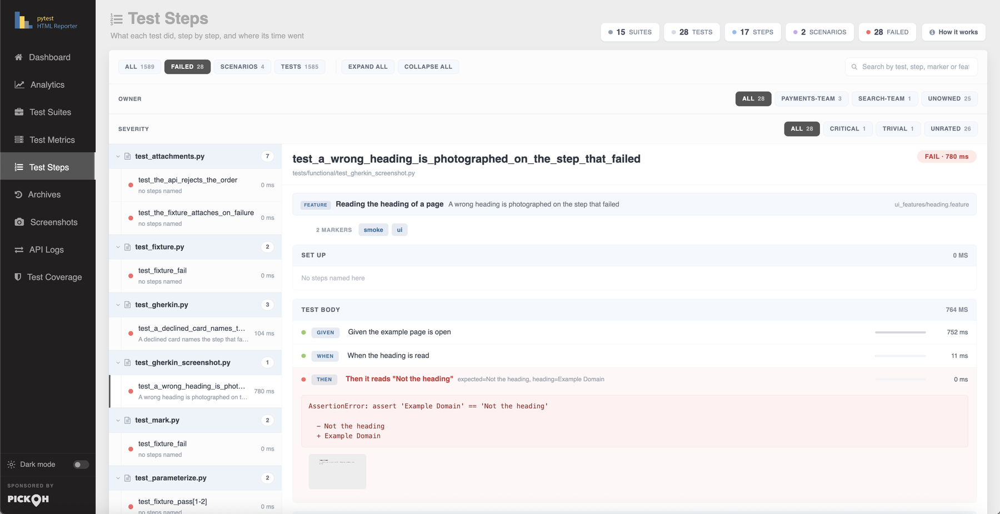
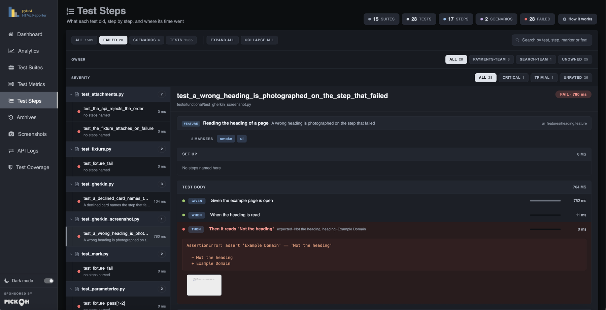
What opens by default is not the first row in collection order — that is almost always a test that named no steps, and the tab would introduce itself with three empty phases. The pick is the first failure that has a tree, then the first test with a tree, then whatever is there.
Screenshots are filed under the step they belong to. A picture taken while a step was open says so itself; the automatic capture runs from the teardown with nothing open, and those are filed against the step that threw, because a photograph of the browser at the end of a failing test is a photograph of the state that step left behind. Those thumbnails form their own lightbox group, so arrowing across stays inside the test being read.
A How it works button in the header opens the How test steps work cheatsheet. Its contents are the same markup as the setup guide below the tree, cloned on open, so the guide someone reads on an empty run and the one they open from the button can never drift apart.
Archives
Every retained build, side by side. A fixed 220px rail runs down the right edge listing each one
newest first — a tick or a cross in the run's pass/fail colour, build #N, and the date
and time it started. The main column is one card per build under a Build #N heading,
carrying that build's total TEST CASES count, its date, a stacked horizontal bar chart
of PASS / FAIL / SKIP / XPASS / XFAIL / ERROR, and a seven-cell counter strip beneath: PASSED,
FAILED, SKIPPED, XPASSED, XFAILED, ERROR, RERUN.
The rail and the cards are wired as a scrollspy, so scrolling highlights the build you are
looking at. Clicking a build in the rail does not simply follow its anchor: showing a tab re-sizes
its charts, which would shift the layout out from under a plain anchor jump, and re-clicking the
build you are already on fires no navigation at all. The click is intercepted, the hash written, and
the build scrolled into view once the relayout has settled. That is what makes
#list-item-7 work as a link from anywhere.
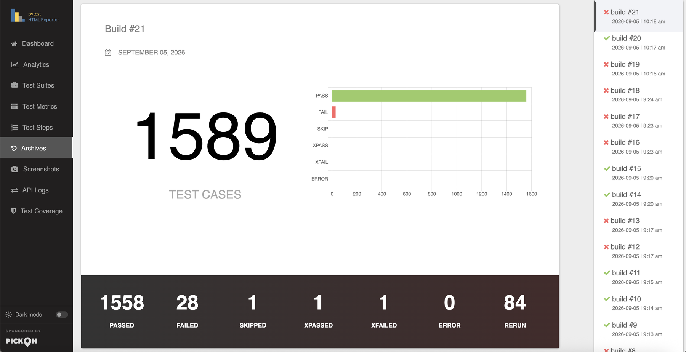
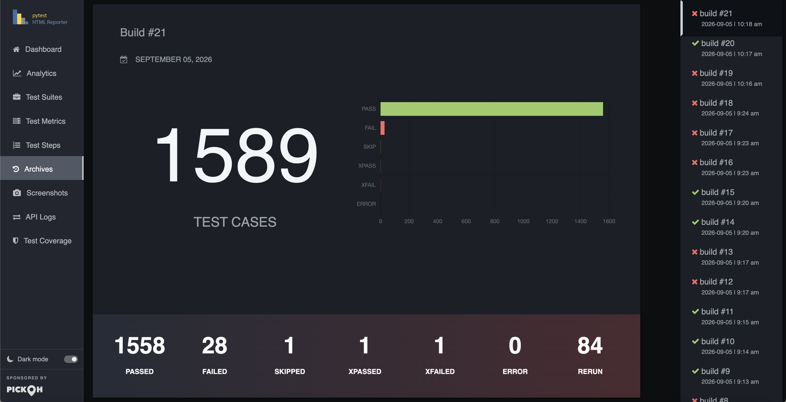
What survives is set by --archive-count, --archive-days and
--archive-since, which intersect: a build has to satisfy every limit
that is set. Setting none keeps everything until the report is slow to open. The build being
reported now counts against --archive-count, so one fewer is kept on disk, and
--archive-count=0 deletes the archive directory outright. Below 1200px the rail stops
being fixed and becomes a scrollable strip above the cards.
Screenshots
The page each test was looking at, beside the suite and the error it belongs to. A responsive grid of cards. Each card is the image itself with an expand glyph on hover and a status badge in its corner, and below it the test name, the suite behind a briefcase icon, and the error the picture explains. A passing test's screenshot simply carries no note line.
A toolbar sits above the grid: status filter pills in a fixed order — All, then Failed, Error, Passed, Skipped, xPassed, xFailed, Rerun — and a search box, Search by test, suite or error. Which pills exist is decided by the gallery, never by the search, because a row that gained and lost buttons as you typed would move the search box out from under the cursor; a pill the search has emptied goes quiet rather than disappearing. Their counts are computed against the search alone, not against a sibling pill's selection, because a pill has to say how many it would show. When only one status exists the whole row is dropped: one pill is not a choice, it is the gallery with a label on it.
Summary chips above the toolbar count what is actually on screen — screenshots shown, distinct suites, failures — so the numbers can never disagree with the cards beneath them.
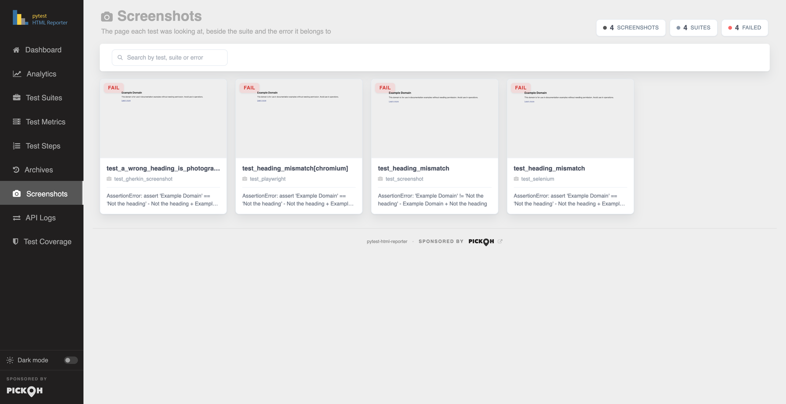
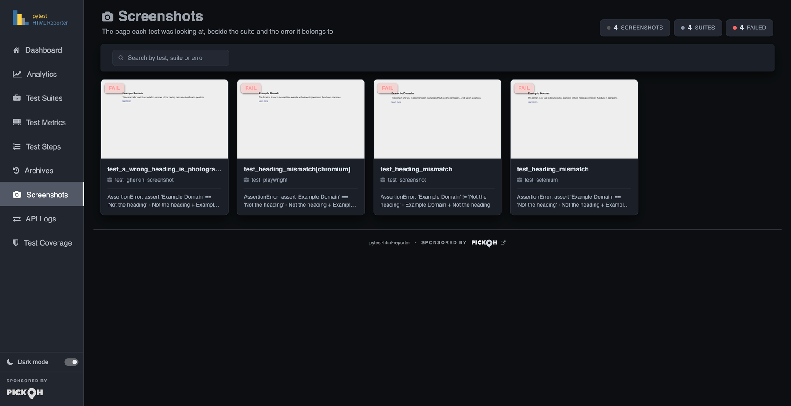
The lightbox
Clicking any thumbnail anywhere in the report opens the report's own lightbox — its own, because
the library the gallery used to use could not be redistributed under MIT. It shows the caption,
SUITE: … :: SCENARIO: …, and an n / N counter, and offers
previous and next buttons, the ← and → arrow keys and
Escape.
Its strip is the gallery as it currently stands: arrowing out of a filtered set into a screenshot you have just filtered away would undo the filter for you. Groups keep the strips separate — the Test Metrics row thumbnails travel the whole table, the Test Steps thumbnails stay inside the one test being read, and the gallery is its own group. Closing drops the image source, so a large screenshot is not left sitting in memory behind a shut overlay.
A search matching nothing says No screenshot matches what you asked for, which is distinct from the run having attached nothing — the three-step setup guide would be a strange answer to a typo. Capture itself is covered in full on Screenshots.
API Logs
The request and response behind each test, with the curl line that repeats the call.
Every payload the run attached is already in the page, parked in a hidden store. The rail is the
index into it: filtering hides entries, opening one clones its parts into the viewer. Nothing is
fetched, so the tab behaves identically from a file:// report, from an email attachment
and off a CI server.
The rail gives one button per attachment carrying a kind badge (API, JSON, Text
or File), the title, the test name with its suite beneath, an HTTP status chip coloured by class —
2xx, 4xx, 5xx, since what you scan for is which of these went
wrong, not which returned 204 — and a detail cell showing the call's duration or the payload's size.
Kind pills with counts and a search box sit above it; the search, Search by test, title, URL or
status, matches suite, test, title, kind, status code and every meta value, so a URL, a method
or a status code finds the call. The payloads themselves are not indexed: they are thousands of
characters each, and repeating them in an attribute would double the file size to no end.
The viewer shows the title, the test and suite, a meta row of Method, URL, Status, Time, Size and Content-Type, then a tab strip and the payload. An API attachment has five parts — Response body, Request body, Request headers, Response headers and cURL — each formatted by its declared format. A single-part attachment collapses the strip rather than offering one button that does nothing. Copy puts the open part on the clipboard, with the same textarea fallback the other panels use; Download saves it as a file named after the test and title, with the extension chosen from the format.
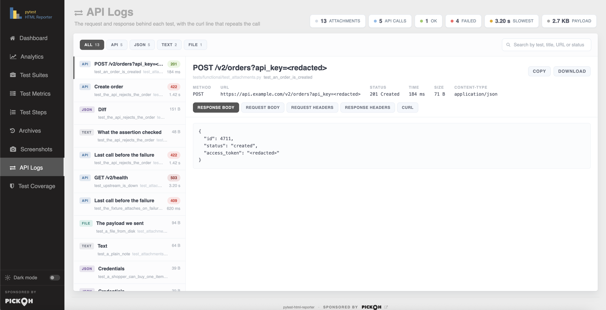
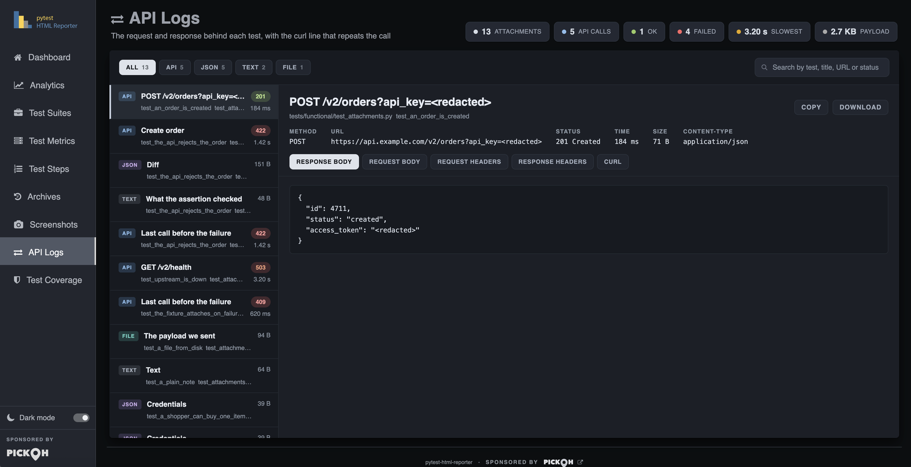
Arriving from the Data button on a Test Metrics row narrows the rail to that one test and shows a banner — Showing what test_creates_an_order attached — with a Show all button. While a scope is on, the pill counts are computed within it: an "API 3" that silently included two other tests' calls would be a filter lying about what it does. Summary chips above the rail count what it is showing: attachments, API calls, ok, failed, the slowest call and the total payload size.
?api_key= query string, in the curl line
and in the fields of a JSON body. Matching is on a substring of the lower-cased name, so
X-Api-Key, Proxy-Authorization and refresh_token are all
covered without listing every spelling anyone has used. A report is a build artifact, and build
artifacts get published.Test Coverage
How much of the code under test this run actually ran. Whatever pytest-cov
measured is read straight out of the finished run, so the number here is the number the terminal
just printed. Nothing is re-executed.
The hero card is an SVG ring with the percentage and the word
covered in its centre, coloured by grade. Grading follows the project's own line when
it has one: a project running --cov-fail-under has already said where its bar is, and
colouring the ring against a number this plugin picked would put the report at odds with the build
that just passed. With no target set, the bands are 90% strong, 75% fair, below that low.
Beside the ring sit stat tiles — Statements, Covered, Missing, Files — plus Branches and Partial
only when branch coverage was actually switched on, since a Branches 0/0 tile
says nothing except that --cov-branch was not passed. Under them a meta row says where
the numbers came from and when (Measured by pytest-cov during this run, or Read from
coverage.xml, written 2026-09-03 08:12), the delta since the last build that measured any, the
target when one is set, and an Annotated source link.
Coverage across the last builds is an area line, oldest first because drift reads left to right, pinned to a full 0–100 axis in steps of 25 — an axis that fits itself to the data turns half a point of movement into a cliff. A build that measured nothing leaves a gap rather than a drop to zero it never took, and the chart is drawn only when at least two retained builds measured coverage.
The per-file table has columns File, Statements, Missing, Branches, Coverage and
Missing lines, and sorts ascending on Coverage by default, because the files worth
opening the tab for are the ones at the bottom. The Branches cell shows an em dash, not a
0, for a file with no branches to cover — that is not the same statement as "none of
its branches are covered" — and the whole Branches column is hidden when the run measured no
branches at all. Missing lines are written the way coverage.py writes them
(12-15, 88, 91-140).
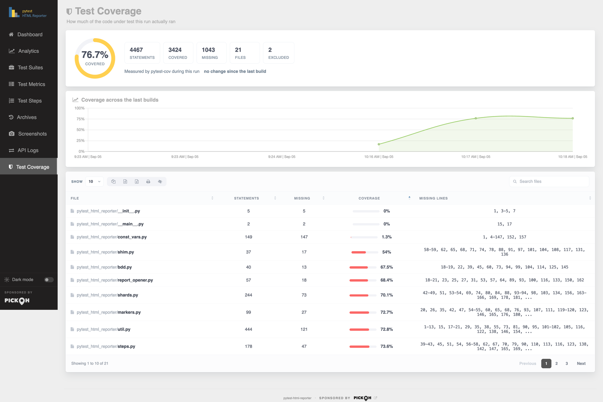
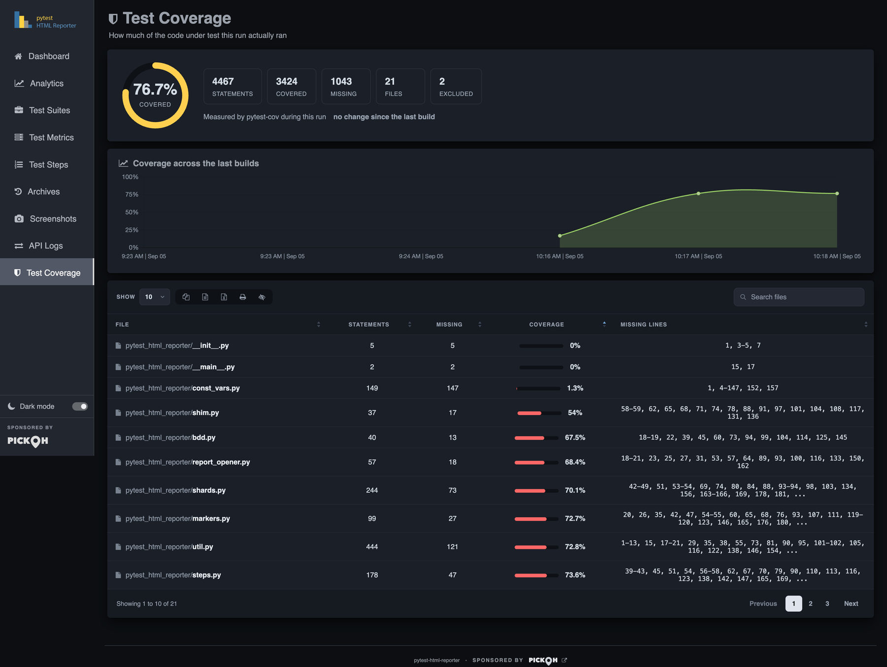
htmlcov in would empty this tab the moment the report was mailed on
its own; a link that does not resolve at least says so in the address bar. Use
--report-link "Coverage=htmlcov/index.html" to keep it in the side nav as well.The Environment dialog
Opened from the Environment chip on the Dashboard, and rendered as an overlay rather than as a card row so the dashboard cards keep their full height. It is a two-column grid of labelled values, closed by its × button, by clicking the backdrop, or by Escape.
- Captured outputA sentence describing exactly what this run keeps — "all tests: stdout, stderr and logging, logging from WARNING", or "logging only (stdout and stderr are off under -s)".
-
CI, Pipeline, Branch, CommitWhich build this was and what it was cut from. Detected from the CI system's own variables, with
Pipelinea link straight back to the run; the branch and commit come from the system where it publishes them and fromgitotherwise. New in 0.4.2. -
Host, Platform, Python, Interpreter, pytestWhere and what this ran on.
Platformnames the operating system the way its own users do —Ubuntu 22.04.4 LTS · Linux 5.15.0 (x86_64)— andInterpreternames thepythonthat actually ran. -
WorkersHow many
xdistworkers reported results, and3 of 8 requestedwhen that is fewer than-nasked for. Only on a parallel run. - Plugins, Arguments, Root, GeneratedEvery installed pytest plugin with its version, the invocation this report came from, the root directory, and when the file was written.
If --environment was given it leads the list and also appears as a badge beside the
report title on the Dashboard. Any number of --build-info key=value pairs are inserted
after it — and they win: a branch, commit, ci or
pipeline you have named yourself is the answer shown, and the detected one is dropped rather
than rendered beside it disagreeing.
One row is opt-in. --report-packages adds
a Packages row holding every installed distribution and its version, the way
pip freeze reads, with the count in the label. It is off by default: a few hundred entries
nobody reads until the day the report is the only surviving record of what was installed.
Escape closes any dialog
Five overlays share one visual language — a backdrop that closes on click, a titled head with a × button, and Escape closing all of them: the Environment dialog, the captured-output and full-error panel, the and N more list, the How test steps work cheatsheet, and the screenshot lightbox. Escape also shuts an open row action strip on Test Metrics.
| Key | What it does |
|---|---|
Esc | Closes any open overlay, and shuts an open row action strip. |
← / → | Previous and next screenshot while the lightbox is open. |
Enter / Space | Activates a jump cell — a suite or test name — exactly as a click does. |
Light and dark themes
The switch sits at the foot of the side nav, labelled Dark mode, because the rail is the one thing on screen in every tab. It is a real switch for assistive technology, and its state and its title both flip with the theme — drawn from the same attribute the page settled before it painted, so the two cannot disagree on first paint.
The choice is remembered per reader and follows the operating system until it is touched. Before anything paints, a small script reads the stored choice; with none stored it asks the system preference, and either way it writes an explicit theme onto the document. That is why there is no white flash on the way into a dark report. A change to the OS preference re-themes the page only while nothing is stored — once you use the switch, the report stops speaking for you.
Every colour in the report is a token, grouped by role — page grounds, surfaces, the rail, borders, text, tables, code bodies — and the status language is carried across both themes unchanged: pass green, fail red, skip amber, xpass grey, xfail magenta, error dark red, rerun gold. The light column is the palette the report has always shipped, kept value for value, so a reader who never touches the switch sees exactly what they saw before.
The charts follow. Each one declares its palette by token name and is re-resolved and redrawn on
a theme change, so a switch re-colours every doughnut, line and bar in place rather than needing a
reload. prefers-reduced-motion: reduce is honoured for the row-action slide, the
target-row flash and the other transitions.
file://
can have storage refused outright by the browser, which costs that reader their saved choice — not
the theme itself.Where to go next
This page is the walk-through. The tabs that carry the most behaviour have pages of their own.
Analytics in depth
How the stability score, the flake and streak columns and the fault grouping are computed, and what each verdict is claiming.
Read moreScreenshots
What gets photographed automatically, which browsers are recognised, and how to take the picture yourself with attach.
Test steps and BDD
Naming steps with a with block or a decorator, how they nest, and what pytest-bdd lands here for free.
CLI reference
Every flag that changes what appears here — retention, capture, screenshots, attachments, steps, coverage and the side-nav links.
Read moreIf a tab in your own report is showing a setup guide rather than data, that is the report saying the run produced nothing for it — not that the feature is broken. Four tabs do this: Screenshots, API Logs, Test Coverage and Test Steps. Each guide is three copy-pasteable steps, and the flag or call it names is in the CLI reference and the Python API. For everything the plugin can do at a glance, see Features; for the first run, Getting started.